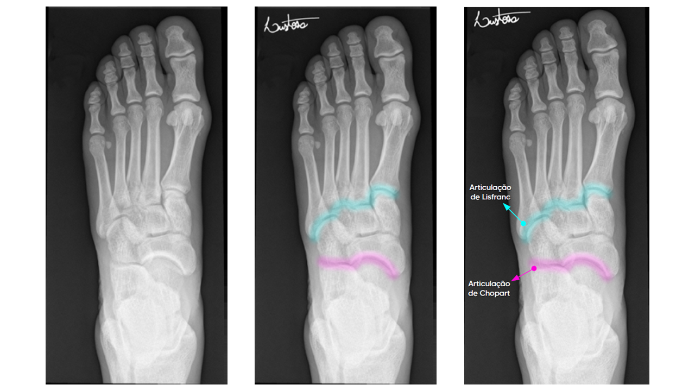

O esqueleto do pé é formado por 7 ossos tarsais, 5 metatarsais e 14 falanges.
O pé e seus ossos podem ser divididos em três partes anatômicas e funcionais:
Os 26 ossos de um pé (dedos ou pododáctilos) são divididos em três grupos:
A articulação entre o mediopé e antepé, articulação tarsometatarsal, também é conhecida como articulação de Lisfranc.
A articulação entre o mediopé e retropé também é conhecida como articulação de Chopart.
